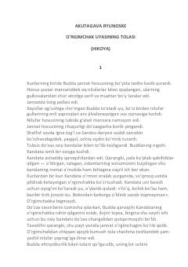

OUXudbinlik va rahm-shafqat haqidagi chuqur falsafiy mazmunga ega yapon hikoyasi.
Ushbu hikoyada do‘zaxda azob chekayotgan qaroqchi Kandataning hayoti va unga berilgan yagona imkoniyat tasvirlanadi. Budda qaroqchining hayotida qilgan yagona yaxshi ishi uchun unga o‘rgimchak tolasi orqali qutulish imkonini beradi, biroq Kandataning xudbinligi uning halokatiga sabab bo‘ladi.